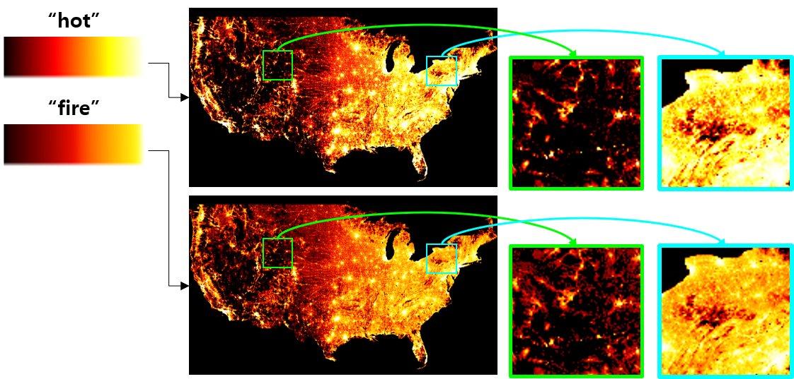
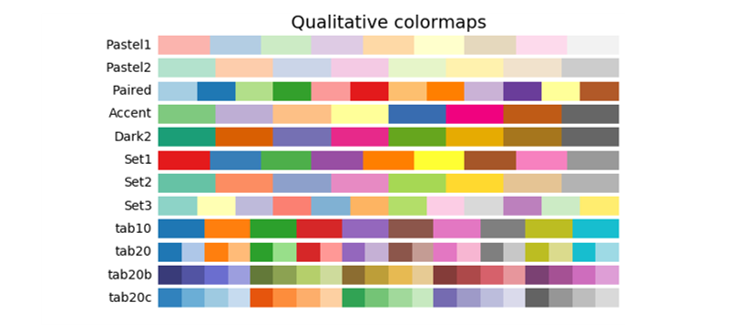
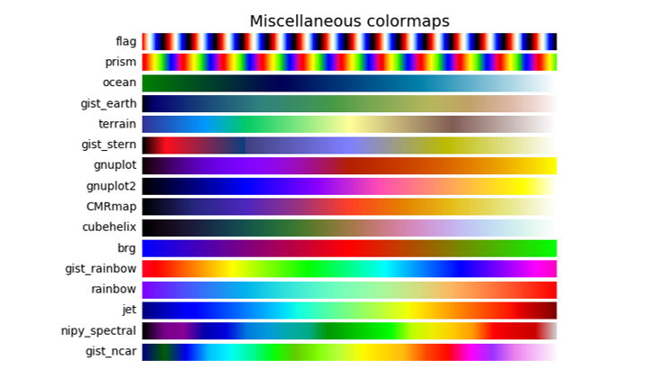
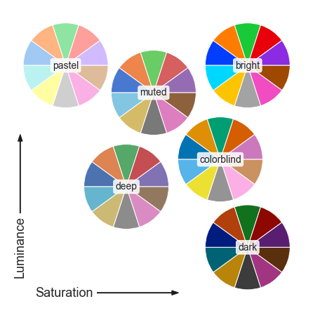
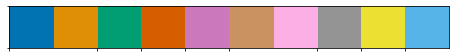
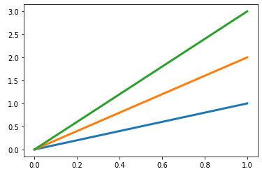

- 지난 글에서, scatter plot에 colormap을 입히고 colorbar를 제어하는 방법, 그리고 흑백 이미지에 colormap을 입히는 방법을 알아보았습니다.
- 이번 글에서는 어떤 colormap을 선택하는 것이 적절할지, 그리고 colormap 자체를 제어하고 활용하는 방법을 알아보도록 하겠습니다.
- 본 글은 공식 홈페이지의 번역과 요약을 토대로 작성되었습니다.
1 | import matplotlib.pyplot as plt |
- 실행결과: 버전은 3.1.3. 기준입니다.
1 | '3.1.3' |
References
2. Colormap 선정
- Matplotlib은 자체적으로 상당히 많은 colormap을 제공하고 있습니다.
- 그러나 언제 어떤 colormap을 사용할지 선택하는 것은 별개의 문제입니다.
- 데이터를 목적에 맞게 전달해야 하고, 아름다워야 하고, 때로는 흑백 버전에서도 구분되어야 합니다.
2.1. Overview
Color Sequences for Univariate Maps: Theory, Experiments, and Principles
A rule-based tool for assisting colormap selection
CIELAB, Wikipedia
colormap 선정에 앞서 다음 사항을 고려해야 합니다.
- 표현의 대상: 데이터의 형태(form)인지, 아니면 수치(metric)인지.
- 데이터에 대한 지식: 강조해야 할 특정 값이 있는지?
- 직관성: 데이터를 직관적으로 전달하는 색상이 있는지?
- 보편성: 해당 분야에서 보편적으로 의미를 가지고 통용되는 색상이 있는지?
일반적으로는, 동일 색조의 균등한(uniform) colormap이 최상의 선택입니다.
- 사람의 뇌는 색의 명도(brightness)변화를 색상(hue)변화보다 더 잘 받아들이기 때문입니다.
- 미국 인구밀도 분포 예시를 보겠습니다 (colormap:
hot)
fire적용시hot보다 데이터의 디테일을 잘 살립니다.- 표현 가능한 색상의 범위가 더 넓고, 시각적으로 균일(perpetually uniform)하기 때문입니다.

색상을 표현하는 방법엔 여러 가지가 있습니다.
그 중 CIELAB 방식은 인간의 색채 지각에 대한 연구를 바탕으로 다음과 같이 정의합니다.
- $$ L^* $$ : Lightness (0=black, 100=white)
- $$ a^* $$ : Position between Magenta and Green (-: Green, +: Magenta)
- $$ b^* $$ : Position between Yellow and Blue (-: Blue, +: Yellow)
matplotlib은 $$ L^* $$ 를 이용해 시각적 전달력을 높이는 전략을 채택하고 있습니다.
2.2. Colormap 종류
- colormap은 기능에 따라 크게 4가지로 나눌 수 있습니다.
- Sequential: 주로 밝기나 채도를 점진적으로 변화시키는 방식입니다.
단일 색상을 사용하기도 하는데, (수치 등) 순서가 있는 데이터라면 필수입니다. - Diverging: Sequantial이 적용된 두 colormap을 중간값에서 무채색으로 연결합니다.
Pearson 상관계수처럼 중간값이 특별한 의미를 가질 때 사용합니다. - Cyclic: 둘 이상의 색상을 양 극단과 중간값 등에서 연결합니다.
각도나 풍향, 시간처럼 주기성이 있는 데이터에 사용합니다. - Qualitative: 범주형(categorical) 데이터처럼 각각이 독립된 의미를 가질 때 사용합니다.
- Sequential: 주로 밝기나 채도를 점진적으로 변화시키는 방식입니다.
- matplotlib이 가지고 있는 네 가지 부류의 colormap을 하나씩 살펴보겠습니다.
- 소스코드는 여기에 있습니다.
2.2.1. Sequential
- Sequential colormap은 대체로 Lightness가 단조증가합니다.
- 일부는 $$ L^* $$의 범위가 0~100이지만, 일부는 20부터 시작합니다.
범위가 작으면 표현 범위가 줄어듭니다. - $$ L^* $$가 시각적으로 선형(perpetually linear)인 것도 있고, 곡선을 취하는 것도 있습니다.
곡선이 된다는 의미는 특정 영역이 강조되고 특정 영역이 뭉개질 수 있다는 의미입니다. - [ 주의 ] Sequential (2) 에 속하는 colormap은 $$ L^* $$이 심하게 꺾이거나 반전되어 있습니다.
흑백 인쇄물에서 데이터 왜곡이 발생할 수 있으니 사용시 주의바랍니다.
- 일부는 $$ L^* $$의 범위가 0~100이지만, 일부는 20부터 시작합니다.
- Matplotlib이 제공하는 Sequential colormap은 다음과 같습니다.
- Perpetually Uniform Sequential:
viridis,plasma,inferno,magma,cividis
- Sequential:
Greys,Purples,Blues,Greens,Oranges,Reds,YlOrBr,YlOrRd,OrRd,PuRd,RdPu,BuPu,GnBu,PuBu,YlGnBu,PuBuGn,BuGn,YlGn
- Sequential (2):
binary,gist_yarg,gist_gray,gray,bone,pink,spring,summer,autumn,winter,cool,Wistia,hot,afmhot,gist_heat,copper
- Perpetually Uniform Sequential:
2.2.2. Diverging
- Diverging은 두 개의 Sequential colormap이 $$ L^* = 100 $$ 부근에서 만나는 형태로 꺾여있습니다.
- 양 극단의 $$ L^* $$ 값이 비슷하면 데이터를 알아보기 좋은데,
BrBG나RdBu가 이 점에서 좋습니다. coolwarm도 좋은 선택이지만 표현되는 $$ L^* $$ 범위가 좁다는 단점이 있습니다.
- 양 극단의 $$ L^* $$ 값이 비슷하면 데이터를 알아보기 좋은데,
- Matplotlib이 제공하는 Diverging colormap은 다음과 같습니다.
PiYG,PRGn,BrBG,PuOr,RdGy,RdBu,RdYlBu,RdYlGn,Spectral,coolwarm,bwr,seismic
2.2.3. Cyclic
- Cyclic은 시작과 끝의 색상과 $$ L^* $$ 이 동일해야 합니다.
- Diverging처럼 단조증가와 단조증가를 반복할 수도 있고,:
twilight,twilight_shifted - HSV 공간에서 색상을 변화시키는 방식도 있습니다:
hsv
[ 주의 ] HSV 방식은 $$ L^* $$ 이 오르내리기 때문에 흑백 인쇄시 데이터를 알아보기 어렵습니다.
- Diverging처럼 단조증가와 단조증가를 반복할 수도 있고,:
- Matplotlib이 제공하는 Cyclic colormap입니다.

2.2.4. Qualitative
- 독립적인 데이터를 시각화하는 목적이기 때문에 $$ L^* $$ 제약도 없습니다.
- 연속적인 데이터를 시각화할 때는 사용해서는 안됩니다.
- Matplotlib에서는 다음과 같은 Qualitative colormap을 제공하고 있습니다.
Pastel1,Pastel2,Paired,Accent,Dark2,Set1,Set2,Set3,tab10,tab20,tab20b,tab20c

2.2.5. Miscellaneous
- 이름 그대로, 특정 목적을 가지고 만들어진 ‘여러 가지’ colormap입니다.
- 예를 들면
gist_earth,ocean,terrain은 지리정보시스템(GIS)에서 사용됩니다. - 지형을 녹색과 갈색으로 표현하고 바다의 깊이를 파랑으로 표현하는 식입니다.
CMRmap은 회색조로 변환되었을 때를 염두에 두고 만들어진 colormap이며,cubehelix는 밝기와 색상을 동시에 부드럽게 전환하기 위해 만들어진 colormap입니다.
- 예를 들면
- 가장 많이 사용되는
jet와rainbow도 여기에 속해있습니다.- matplotlib colormap 예제에 있어서이고 무지개색이라는 점이 친숙해서 아무데나 많이 쓰입니다.
- 그러나 직관적 이해도와 직결된 $$ L^* $$ 분포 관점에서 볼 때 바람직한 선택은 아닙니다.
- Matplotlib에서 제공하는 Miscellaneous colormap 명단은 다음과 같습니다.
flag,prism,ocean,gist_earth,terrain,gist_stern,gnuplot,gnuplot2,CMRmap,cubehelix,brg,gist_rainbow,rainbow,jet,nipy_spectral,gist_ncar- 색상을 주루룩 늘어놓으면 이렇게 보이는데,
 - $$ L^* $$ 값과 함께 보면 이렇습니다.

- 색상을 주루룩 늘어놓으면 이렇게 보이는데,
2.3. Color Vision Deficiencies
Color Blindness- learn all about it
15 Tools If You Are (Not) Colorblind
Seaborn, Building color palettes
“형, 저 사실 색약이예요. 좀 심해요.”
- 그래프를 그릴 때마다 선배에게 혼나던 후배가 있었습니다.
- 선배가 한참 혼낸 후, 저더러 좀 가르쳐주라고 보냈길래 커피 한 잔을 먼저 마시려는데 저 말을 하더군요.
- 미안함과 난감함이 교차했습니다. 위로를 하기도 뭐하고 어떻게 가르칠지는 더 그랬구요.
색약, 색맹인 분들도 디지털의 도움을 빌려 어려움을 어느 정도 해소할 수 있습니다.
- 보통 빨강과 녹색을 구분하지 못하는 적녹색맹이 많습니다.
- 이들 중 하나만 다른 색상으로 치환해도 알아보기 훨씬 편하다고 합니다.
- 이 글을 보는 분께서 색상 구분으로 인한 어려움을 겪으신다면 이 링크를 참고해보세요.
matplotlib에서도 Red와 Green이 함께 포함된 colormap 사용을 피하는 것을 권합니다.
matplotlib 기반인 seaborn에서는 이런 분들을 위한 color palette를 제공하고 있습니다.
색상 구별에 어려움을 겪는 분들께서 그림을 알아보기 조금 수월해진다고 합니다.
seaborn
colorblindcolormap 호출1
2
3import seaborn as sns
current_palette = sns.color_palette('colorblind')
sns.palplot(current_palette)- 실행결과

- 실행결과
matplotlib 형식 graph 작성
1
2
3
4fig, ax = plt.subplots()
ax.plot([0, 1], [0, 1], lw=3)
ax.plot([0, 1], [0, 2], lw=3)
ax.plot([0, 1], [0, 3], lw=3);- 실행결과

- 실행결과